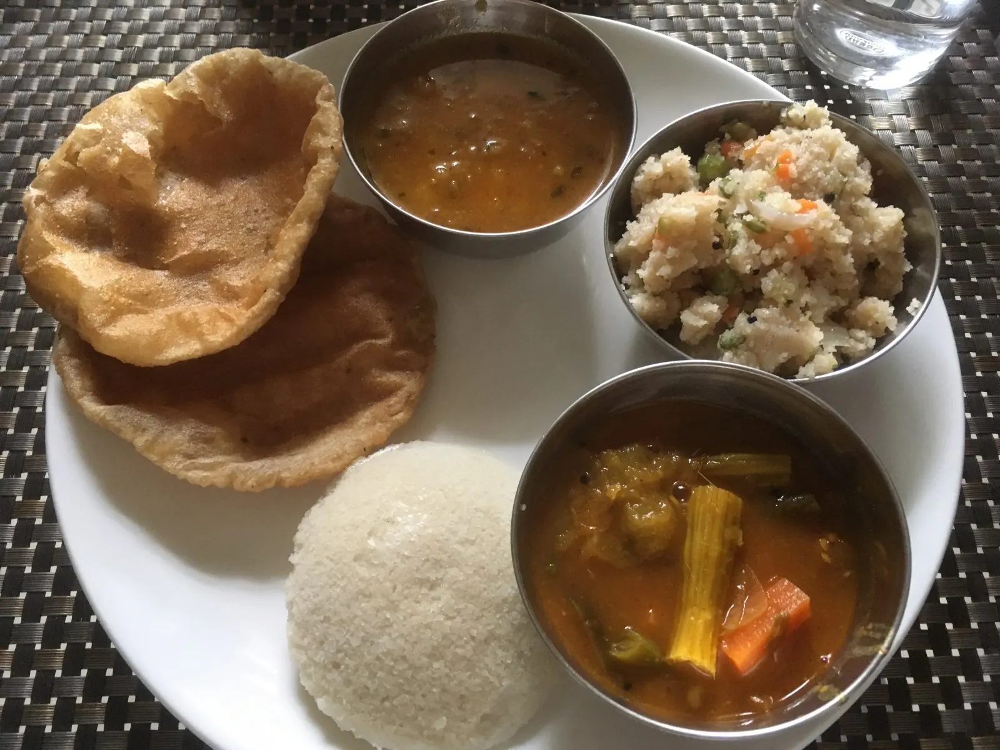
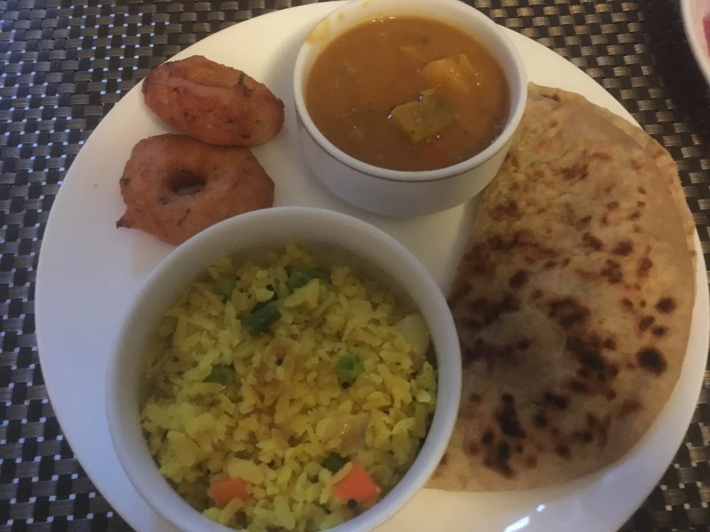
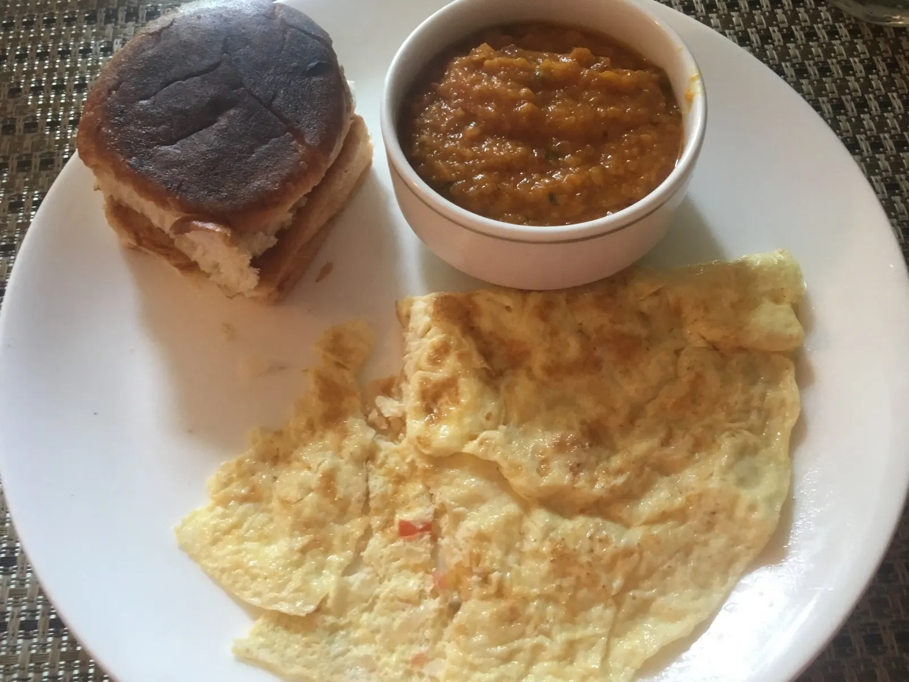
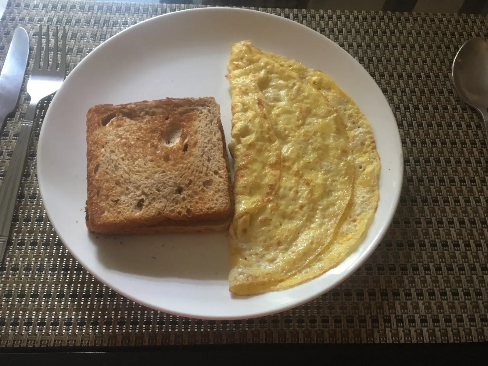
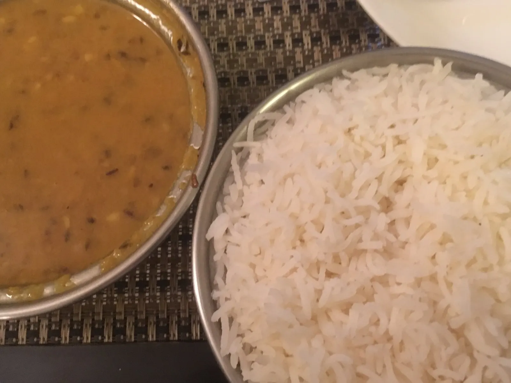
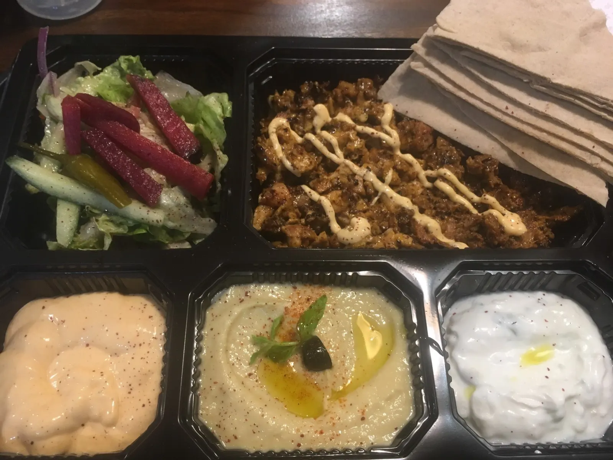
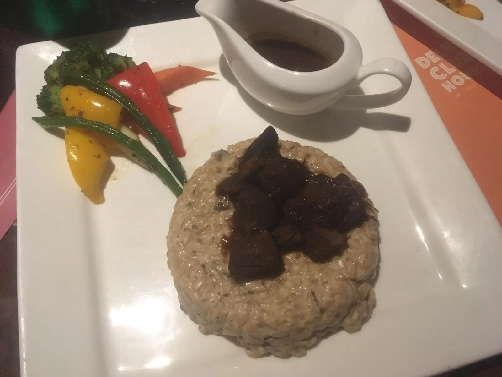
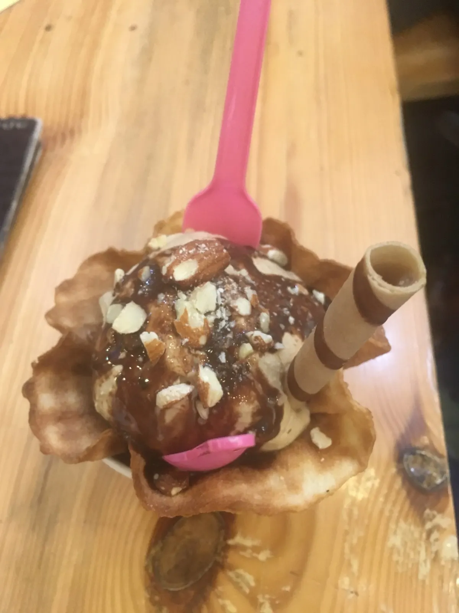

My other blog is too long so I was told, so I decided that food deserves its own blog since food is very important and a good representation of India’s unique culture! This post focuses more on what we ate day-to-day in Gurgaon during the week, as we usually traveled and ate out on the weekends (see my travel posts for more food pics specific to each city!).
Every dish here is bursting with flavor: everything has spices in it, from the masala curry to chai (spiced tea) to chips, and they use a wide variety of herbs. No wonder people here consider American food bland. And northern Indian food is quite different from southern Indian food — in fact, every state has its own unique food culture and style.
The food we had at the company and at the guesthouse was pretty carb and oil rich. About 80% of India is Hindu but less than 40% is vegetarian, which is less than I had thought, though the people who do eat meat generally eat it 2-3 times a week rather than every day, as in the U.S. In rural areas, people are in general more religious and more likely to be vegetarian. Beef is not served here since the cow is a holy animal according to Hinduism (bad luck for you if you accidentally hit a cow on the road), but they do eat buffalo! Also, mutton here is goat, not sheep.
There was a dangerously unlimited supply of tea and coffee and biscuits (cookies) in the office, and we were served fruit juice boxes in the late afternoons (lychee juice got me really excited). As interns, lunch was complementary — usually thali, a selection of various dishes served on a platter: rice and chapati with 3 different curries (I usually got veg) plus dessert, usually a brownie or gulab jamun (a chewy fried ball of dough soaked in flavor sugary syrup) or kheer (a yellow sweet rice pudding). We gradually learned that we could ask for other combinations. People showed me how to curl the pita bread so the curry doesn’t spill out as you’re eating it – I felt like I was learning how to eat all over again! The first week I made the mistake of eating a green pepper that lit my mouth on fire and teared my eyes up (and got laughed at); but in general the food wasn’t too spicy.
I never got tired of the breakfast — they change it up each day, offering 2-3 items from the following menu:
- Bhaji – mashed veggies, like potato and green peas. Somehow it was so good
- Sambar – a lentil-based vegetable stew cooked with tamarind broth
- Upma – a thick porridge from dry-roasted semolina or coarse rice flour, with various vegetables and seasonings
- Paratha —a thick fried flatbread served with curd (yogurt)
- Idli — a round white savory rice cake and popular breakfast food in southern India. The cakes are made by steaming a batter consisting of fermented black lentils (de-husked) and rice. The fermentation process breaks down the starches
- Vada — fried lentil, donut shaped bread
- Poha — yellow flattened rice lightly fried with peanuts, raisins, cardamom, and other spices
- Chole bhature – a Punjabi dish of chana masala or white chickpeas eaten with bhatura, a fried bread made from wheat
- Watermelon and apples. Fruits in season during the summer also include mangoes (so good), lychees (my fav), bananas, and cherries. Raw mango is pretty common here; I did like the tangy flavor. And I only had the chance to try one lychee (from a street cart sample), but I got excited for lychee yogurt, lychee juice, anything lychee really.
- Fruit juice — which I started avoiding after I read that it can cause cancer. It seems that everything either causes or cures cancer these days!





I learned about this vegetable called tauri (pronounced tori) which is like a green zucchini. The people on my team did not like this vegetable – they said their mothers would feed it to them when they were sick, and it’s super healthy but doesn’t taste great. It is in the same category as lauki (lock-ie), another not-so-yummy vegetable. At least you could eat lauki with yogurt, but for tauri, nothing eaten with it will help, they said hopelessly. Also learned that okra is called ladyfingers, and that spinach is enjoyed in the winter.
I also learned about this dessert called gola (goo-la) — crushed ice with syrup flavoring on a stick (you have to eat it quick before it melts). This is what gets us through hot summers, my team told me. One time they bought me an orange ice lolly (i.e. popsicle). When we were little we would show our orange tongues to each other and laugh at each other, they said. They often talked nostalgically about the old days.
My last day of the internship was the day before Independence Day. The first thing I noticed in the office was the orange, white, and green, from a flower formation on the ground that read Jai Hind (“Victory to India” or “Long live India”) to flags posted all around the office, in honor of the holiday. In celebration, we were served laddoo — these are sphere-shaped sweets made of flour, ghee/butter/oil, and sugar, sometimes with other ingredients like chopped nuts or dried raisins. This year, Independence Day also happened to be on the same day as Raksha Bandhan, nicknamed Rakhi, an annual holiday where sisters of all ages would tie an amulet, called the rakhi, around the wrists of their brothers, symbolically protecting them and receiving a gift in return. Raksha Bandhan is Sanskrit for “the bond of protection, obligation, or care.”
In Kochi, on the coast of southwest India, we did a private canoe tour and visited a village on a tiny island, where we were served food on a banana leaf! We mashed veg curry and rice together and ate it with our hands. For dessert we mashed a plantain with the rice. I was so full, but you have to eat everything on your plate—it’s rude not to!
It was there also that I got to climb a coconut tree and drink out of a coconut. They cut it in half for you, and after you drink the water, they would cut out the white fleshy meat part. I wasn’t a huge fan of the meat part – I didn’t like the soft texture and it didn’t have much taste other than the coconut-y taste – but I really enjoyed the fresh coconut water – it’s definitely different from the Costco-packaged ones!
Drinking tap water is a big no-no — on the streets they sold bottled water for 20 rupees. At restaurants we would order bottled water and other drinks like lassi or lime soda. I drank so much sweet lassi and mango lassi…I also really like the lime soda here — it’s like Sprite but with lime juice, so it has that sour flavor too.
We were also recommended to avoid street food, which I did all summer. Ironically, I ended up getting food poisoning not from street food but from a high-end golf club.
We would drink chai (tea) all the time, either at work, or when we were guests at someone’s home, or after dinner at the guesthouse. I really like the chai here. They put lots of milk and sugar. I think the chai in the U.S. is too strong – they probably add a lot of cinnamon and cardamom.
I was not a huge fan of spiced buttermilk (also, don’t expect it to be sweet or else you’ll be very disappointed). It has a very distinct taste. But Indians seem to really like it — must be an acquired taste. Also, don’t drink jal jeera (spiced “lemonade”) unless you’re feeling really adventurous. It tastes nothing like lemonade…
Definitely have sugarcane juice though! At a food hall we went to in Gurgaon, they sell it in glass bottles, which enhances the taste (though they really should create incentives to reuse/recycle the bottles instead of letting people just keep it..)
If you get the opportunity, try buffalo milk. It’s less milky than cow milk and more fatty, making it more delicious in my opinion. Buffalo milk is widely used in Punjab — it’s in the chai, the lassi, etc.
The only time I really felt homesick was after coming back from Hong Kong, when I realized how much I missed Asian food (there’s a lot of Chinese food here, but it’s still Indo-Chinese food). We did eat non-Indian food when we needed a change from the guesthouse food — there were plenty of food options to try around the area.



One of my biggest takeaways from this summer (and best ways to learn about Indian culture) was learning about the food — how they eat it, how they flavor it, when they eat it, who they eat it with. Indian food is so deliciously flavorful, and not unbearably spicy (for the most part)! I’m sure I only got a sampling of the many varieties of dishes in India, but I hope to incorporate some of the dish ideas (and spices) into my own cooking (as I start “adulting”) and will definitely be on the lookout for good Indian places back in the States (and look forward to knowing most of the items on the menu this time!).